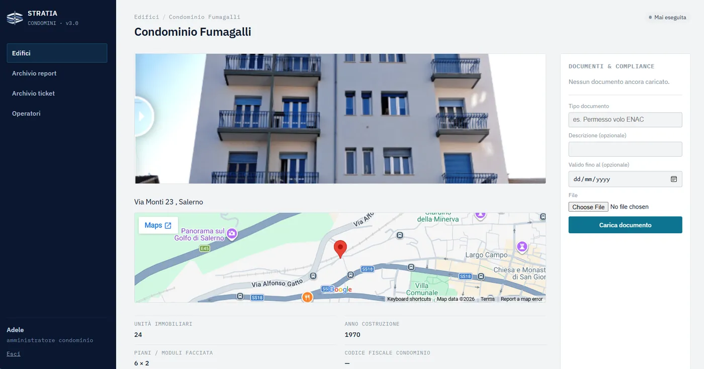
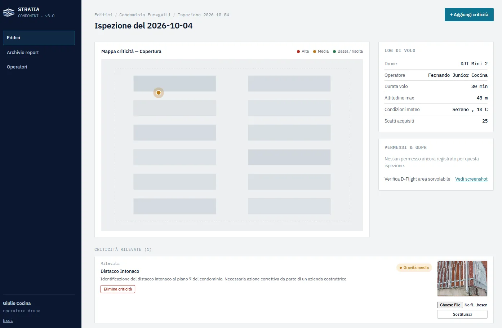
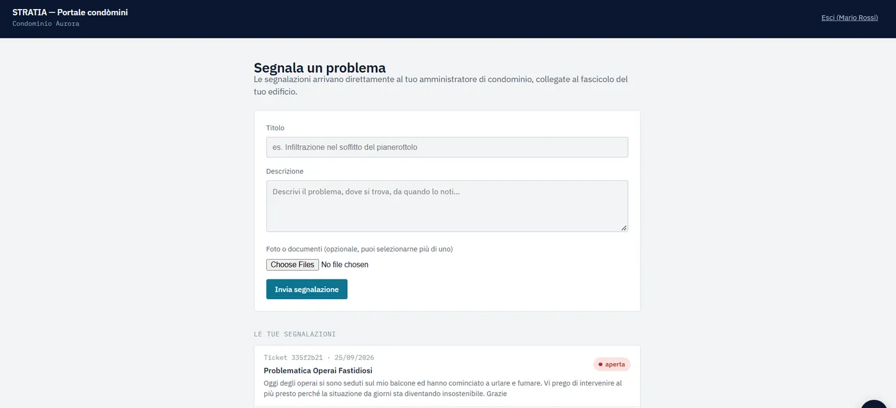

Ticket, report e ispezioni con drone.
Tutto il tuo condominio, in una piattaforma.
Il gestionale tecnico che amministratori e condomini usano insieme: criticità rilevate dal drone, segnalazioni dirette, report già pronti per l'assemblea.
STRATIA Condomini è il gestionale tecnico dell'edificio: criticità, storico, documenti e report di assemblea in un unico spazio digitale, alimentato da ispezioni aeree reali — non da un sopralluogo a vista. E per la prima volta il condomino non resta fuori: vede lo stato del suo edificio e può segnalare un problema direttamente, senza passare per il passaparola.
- Amministratori di condominio
- Studi tecnici e professionisti dell'edilizia
- Gestori immobiliari e property manager
- Assemblee condominiali che decidono su base oggettiva
Tre cose che ogni amministratore conosce bene
Non è mancanza di impegno: è che le informazioni sullo stato dell'edificio restano sparse, e i condomini restano fuori dal quadro finché non arriva la convocazione di assemblea.
Stato dell'edificio incompleto
Tetti, grondaie e facciate alte restano fuori portata senza ponteggi — e sono quasi sempre il punto dove parte l'infiltrazione che si scopre tardi.
Documentazione dispersa
Foto nelle email, relazioni su chiavette, preventivi in cartelle diverse: quando serve mostrare qualcosa in assemblea, si ricostruisce tutto da capo.
Condomini scollegati dal processo
Il condomino scopre un problema solo quando è già una voce di spesa, perché non ha un modo diretto per vedere lo stato dell'edificio o segnalare qualcosa prima.
Due ruoli, una sola piattaforma
Non è solo uno strumento per chi amministra: è lo spazio dove amministratore e condomini vedono gli stessi dati, ciascuno con il proprio ruolo.
Gestione tecnica sotto controllo
- Criticità mappate per edificio, con foto e posizione
- Storico nel tempo: cosa è stato segnalato, quando, e com'è stato risolto
- Documenti e report sempre nello stesso spazio, pronti per l'assemblea
- Nessuna ricostruzione dell'ultimo minuto prima di una riunione
Finalmente parte attiva, non spettatore
- Vede lo stato reale del proprio edificio, non solo quello che gli viene raccontato
- Può segnalare un problema direttamente in piattaforma, senza passaparola
- Arriva in assemblea con le stesse informazioni dell'amministratore
- Partecipa alle decisioni su base oggettiva, non solo per sentito dire
La piattaforma in azione
Tre schermate reali, una per ogni persona coinvolta: chi amministra, chi ispeziona, chi vive il condominio ogni giorno.



Dal rilievo aereo alla piattaforma condivisa, in tre passaggi
Nessuna curva di apprendimento per te: il drone e l'analisi li gestiamo noi, tu e i condomini ricevete la piattaforma già pronta all'uso.
Rilievo aereo
Il drone rileva facciate, tetti e coperture da ogni angolazione, inclusi i punti che da terra non si vedono — è il motore dati di tutta la piattaforma.
Nessun ponteggioPiattaforma condivisa
Ogni criticità entra nel gestionale con foto, posizione e stato: amministratore e condomini vedono gli stessi dati, ciascuno con il proprio accesso.
Tutto in un postoAssemblea e segnalazioni
Il report è già pronto da presentare, e i condomini possono segnalare un problema in qualsiasi momento — non solo quando arriva la convocazione.
Pronto da mostrareGestione tradizionale vs STRATIA Condomini
| Gestione tradizionale | STRATIA Condomini | |
|---|---|---|
| Accesso a tetti e facciate alte | Limitato, serve ponteggio | Completo, dall'alto |
| Coinvolgimento dei condomini | Solo in assemblea, per sentito dire | Accesso diretto allo stato dell'edificio |
| Segnalazione di un problema | Passaparola o telefonata all'amministratore | Direttamente in piattaforma, tracciata |
| Documentazione | Dispersa, da ricostruire | Centralizzata e tracciata |
| Storico nel tempo | Raro, manuale | Automatico, sempre consultabile |
| Pronto per l'assemblea | Da preparare ogni volta | Report già pronto |
Progetto Pilota — Demo gratuita di 6 mesi
Stiamo selezionando un numero limitato di amministratori, studi tecnici e gestori immobiliari per il lancio di STRATIA Condomini: 6 mesi di accesso gratuito, con il supporto diretto del nostro team per configurare la piattaforma sui tuoi edifici e pianificare le prime ispezioni.
Prima di chiedere la demo
Sostituisce il gestionale contabile che uso già?⌄
Cosa cambia davvero rispetto a un sopralluogo tradizionale?⌄
Cosa succede dopo i 6 mesi gratuiti?⌄
Quanto tempo richiede un'ispezione?⌄
Serve un'autorizzazione particolare per far volare il drone sul condominio?⌄
Vuoi vedere il tuo edificio così?
Il progetto pilota è a posti limitati: 6 mesi di accesso gratuito, supporto diretto del team, nessun costo iniziale.
Richiedi la Demo Gratuita di 6 mesiInviando il modulo acconsenti al trattamento dei dati secondo la informativa privacy.